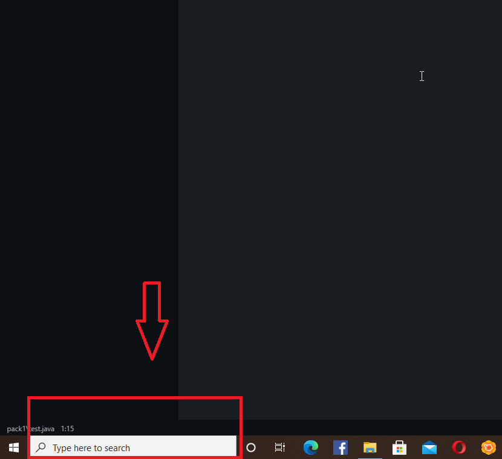

As a programmer you need to learn to use the terminal. In java if you want to compile and run the java program, this is how you do it:
At first you have to compile the java program. And then you have to run the class that contains the main method.
Steps to run java in terminal
open your command prompt, that is, “cmd”. To do that, write in your search bar of your windows, cmd and then click enter.
Your cmd and my terminal may not look the same. But don’t worry, I am using a terminal from microsoft that I downloaded from the microsoft store and then I also added some styling to my terminal.
In your cmd there will be a path to your C: drive. You have to change the path to your desired java program location. So that you can easily compile and run it.
To change your path or cmd or terminal directory follow the image below
Here “cd” is to set the path and then you set the whole path to the file inside “”, so that if there is any space in any folder name, it doesn’t cause any problem. Like here in my path which is “F:\MY SPACE\JAVA\New folder” there is space in the file name “MY SPACE”. This will cause error if we don’t put “”.Remember to put the whole path to your java program file.
Now I will teach you how to navigate in the terminal. If you want to go to another file inside the path folder, then you do this:
If you want to go back, i.e, set the path to the previous folder then write in the cmd:
So our java program is inside “F:\MY SPACE\JAVA\New folder\pack1”. So we set our cmd path to that.
Then we compile our java file. At first we write “ javac” which is to indicate that we are going to compile the program. Then we write the program name, which is test.java. You must write [java program name].java. Don’t forget to write .java in the end.
After this our java program has been compiled which has created a class file inside same directory called “test.class”. Now we have to run the class not the program. So we write: java [classname]. And thus the program runs
Now I am going to show you how you can compile and run java file from another directory.
At first we are going to go to the previous file by writing “cd..” and then we are going to write:
See the image
Now to run the class file from my cmd path we need to tell the cmd the location of the classpath by writing “-cp”. So what we write is:
And thus our java class file runs.